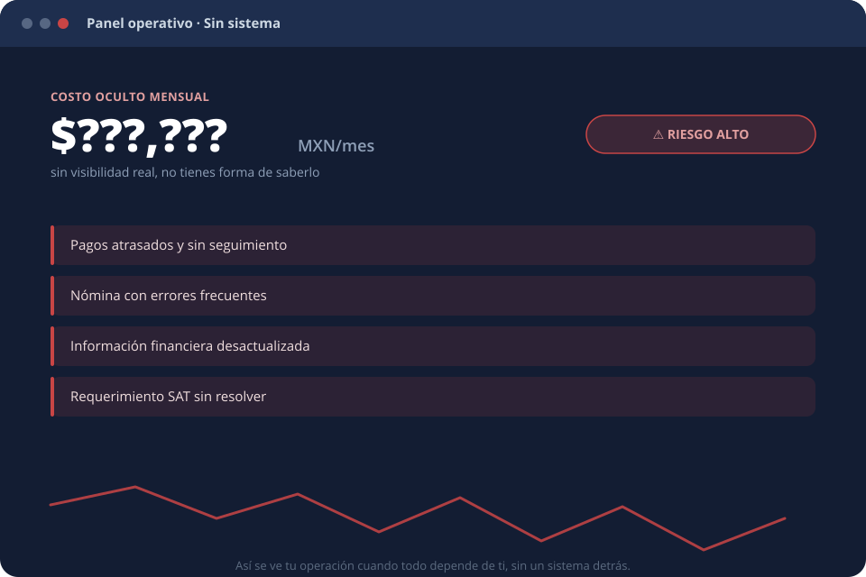
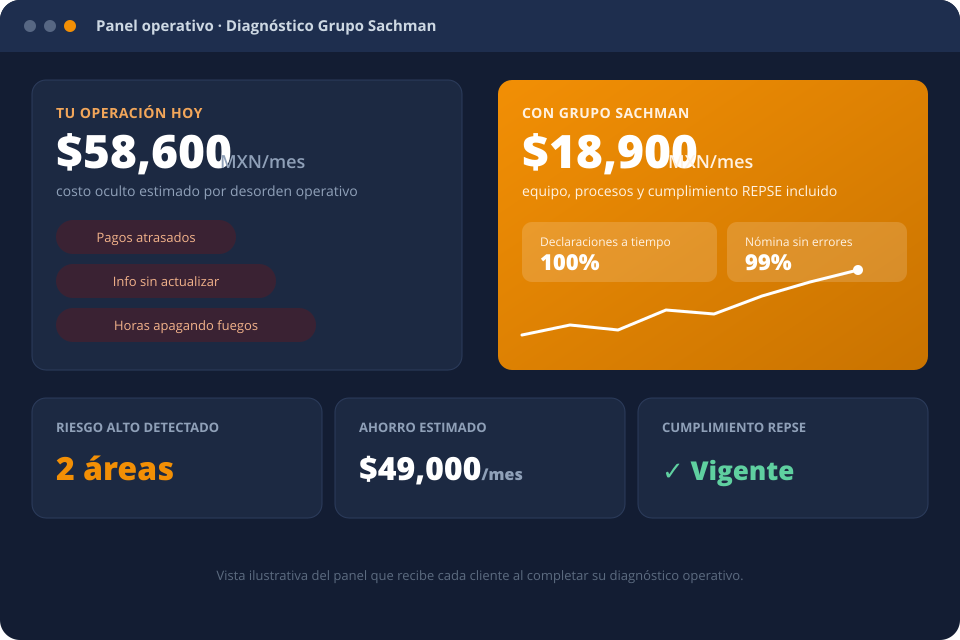
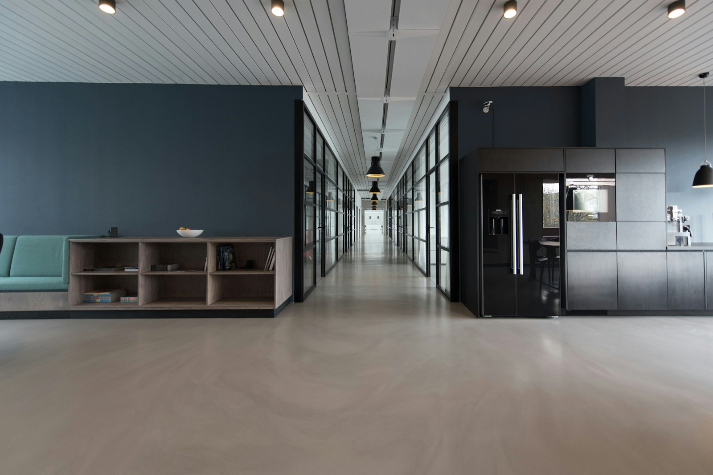

Si todo depende de ti, estás operando sin estructura.

Tres señales de que tu operación te está controlando a ti, y no al revés.
No sabes cuánto dinero entra, sale o se está fugando en tu empresa — hasta que ya es tarde.
Toda tu operación depende de ti o de una o dos personas más. Si alguien falta, todo se detiene contigo.
Pasas más tiempo apagando fuegos y decidiendo a ciegas que dirigiendo tu negocio.
Ninguna de estas señales se resuelve contratando una persona más.
Somos el equipo operativo externo que se instala dentro de tu empresa: procesos, gente y tecnología ya probados, con visibilidad real sobre lo que hoy se está fugando.
No somos una empresa de outsourcing. Servicios especializados de alto nivel, sin los riesgos de la subcontratación genérica — tú eliges in-house, remoto o híbrido.

Cuatro etapas, de diagnóstico a operación — sin que tú tengas que administrar el proceso.
Mapeamos dónde está el riesgo, la fuga de dinero y los cuellos de botella de tu operación actual.
Armamos el sistema operativo a la medida: qué áreas, con qué alcance y con qué nivel de control necesitas.
Instalamos procesos, gente y tecnología en semanas — no meses, y sin detener tu operación actual.
El sistema corre solo. Tú recibes reportes y decides; nosotros ejecutamos y damos seguimiento.
El resultado de tener un sistema operativo externo, no una lista de tareas contratadas.
Sin construir ni supervisar un equipo interno para lograrlo.
Información al día, no al cierre de mes ni bajo pedido.
Un sistema escalable que no depende de que una sola persona no falte.
Operamos con registro REPSE vigente — fiscal, laboral y legal, resuelto antes de que se vuelva un problema.

El diagnóstico es gratuito y no te compromete a nada. El costo real es seguir operando sin control.